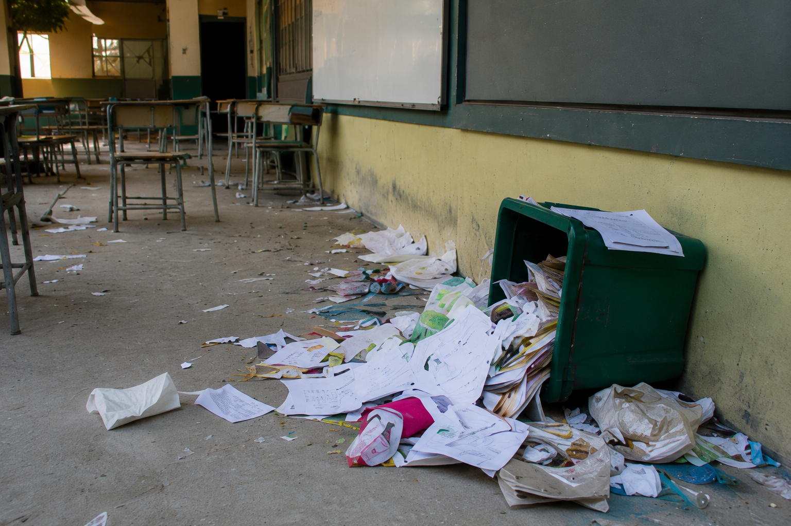
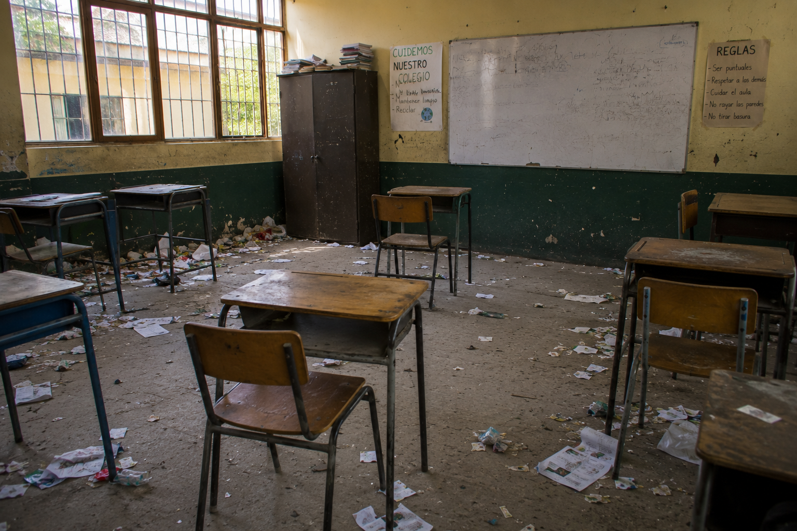
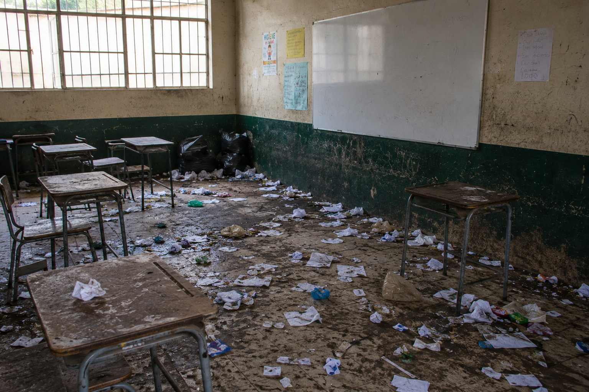
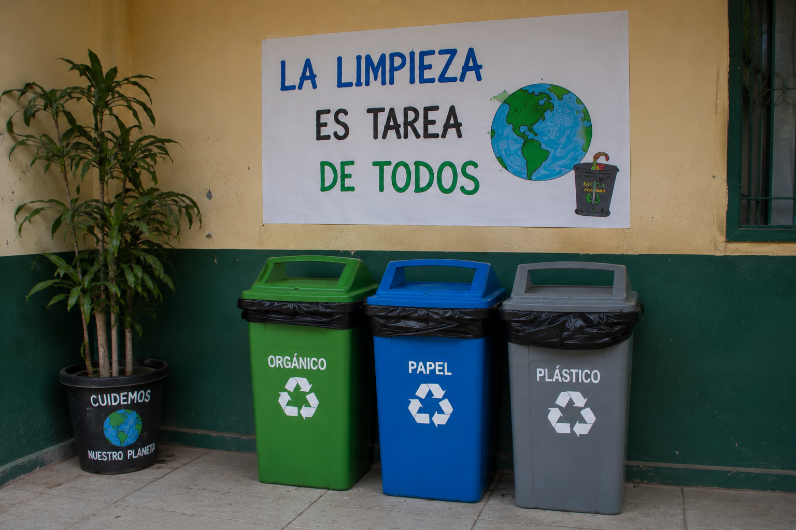
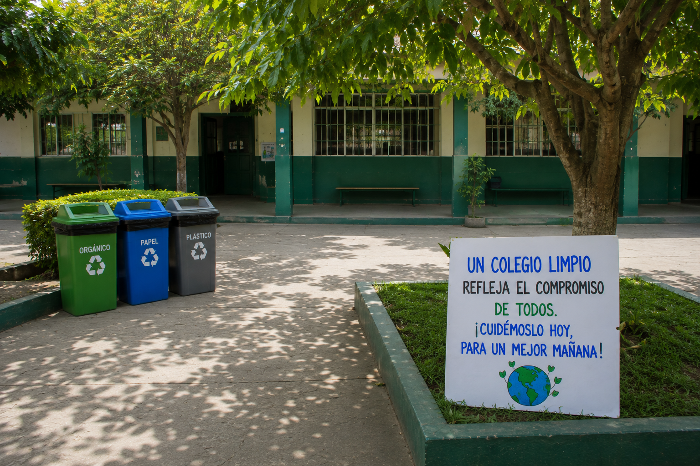

Explora cada etapa y descubre cómo podemos construir una escuela más limpia y saludable.
"Reconocer el problema es el primer paso para cambiar."
En los patios y aulas es frecuente encontrar papeles, envoltorios, botellas y otros residuos. Esta situación afecta la limpieza, el cuidado del ambiente y la convivencia dentro de la escuela.

🎥 Ver video ⬇ Descubrir las causas"Nuestras acciones diarias tienen un impacto en el ambiente."
La acumulación de residuos en patios y aulas se produce por distintos hábitos y situaciones que pueden corregirse con el compromiso de toda la comunidad educativa.

🎥 Ver video ⬇ Ver las consecuencias"Lo que hacemos hoy influye en el futuro de nuestra escuela."
La acumulación de residuos afecta el ambiente escolar y la calidad de vida de toda la comunidad educativa. Un espacio sucio puede generar problemas de higiene y convivencia.

🎥 Ver video ⬇ Descubrir las soluciones"Cada pequeño gesto suma para cuidar nuestra escuela."
Con la participación de estudiantes, docentes y familias, es posible reducir la acumulación de residuos y mantener los espacios escolares limpios y saludables.

🎥 Ver video ⬇ Reflexionar sobre el tema"Un espacio limpio es responsabilidad de todos."
Mantener limpia la escuela requiere el compromiso y la colaboración de toda la comunidad educativa. Con pequeñas acciones diarias podemos construir un ambiente más saludable, agradable y sostenible.

🎥 Ver video ⬇ ¿Qué puedes hacer tú?"El cambio comienza con pequeñas acciones."
Todos podemos colaborar para tener una escuela más limpia y agradable. Con simples hábitos diarios es posible generar un gran cambio.